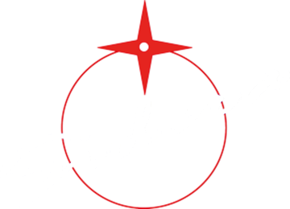

Anno
Caricamento dei risultati…
Percentuali delle risposte al questionario ECM nell'anno, in forma aggregata e anonima.

Customer satisfaction ECM
Come i partecipanti valutano i nostri corsi: i risultati del questionario ECM, in forma aggregata e anonima, aggiornati alla chiusura di ogni evento con l'invio del rapporto ECM.
Percentuali delle risposte al questionario ECM nell'anno, in forma aggregata e anonima.